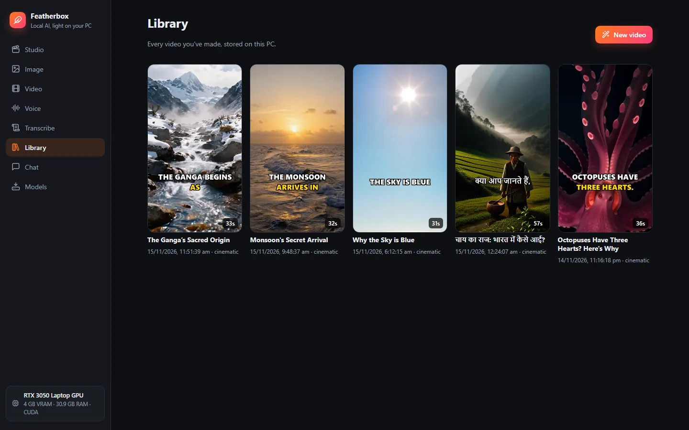
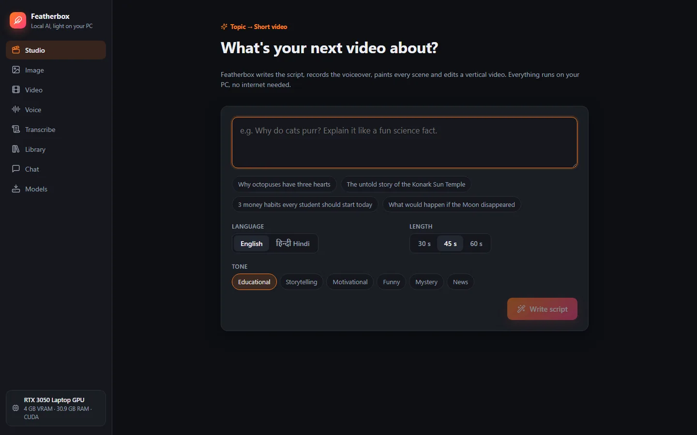
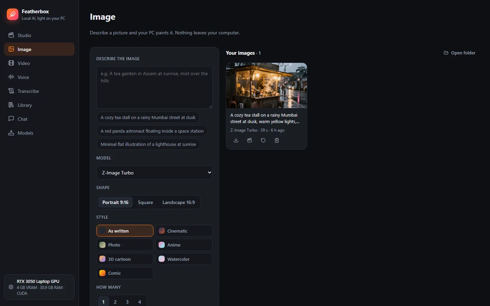
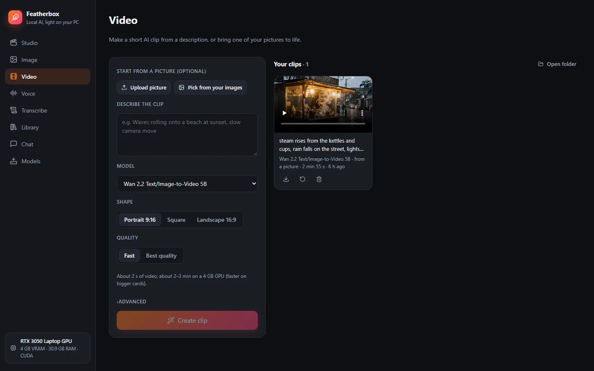
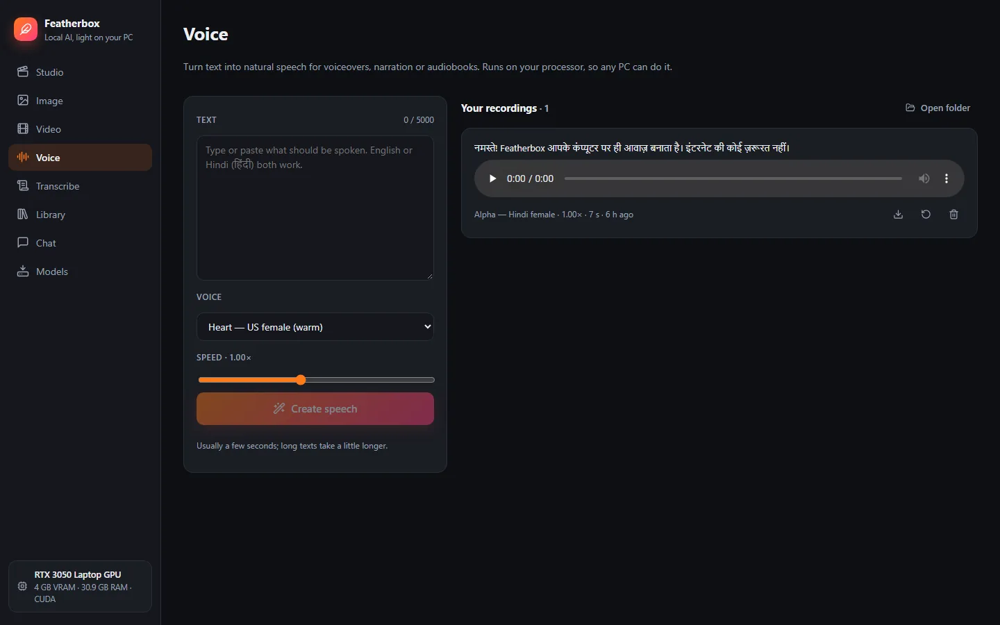
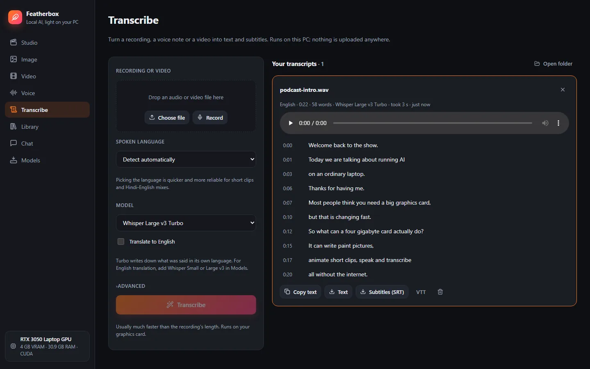
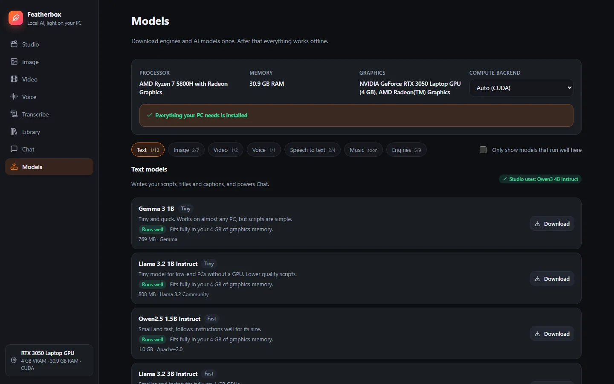

Local AI,
light on your PC.
Write, paint, animate, speak and transcribe with AI that runs on your own computer, even on an ordinary laptop with a 4 GB graphics card. No cloud, no account, no subscription.
- Works offline
- No sign-up
- 4 GB GPUs or CPU only
- English & Hindi

Everything here came out of one gaming laptop.
An RTX 3050 with 4 GB of graphics memory, no internet needed. Type a topic and Featherbox writes the script, records the voice, paints or animates every scene, adds captions and music.
What happens when you press Make video
- ScriptA local text model writes the scenes in English or Hindi.
- VoiceKokoro records the narration on the processor.
- Pictures or motionZ-Image paints each scene; Wan 2.2 can animate them.
- Captions and musicShort captions burned in, plus music that ducks under the voice.
A 30–60 second video with still pictures takes 3–5 minutes on this laptop.
→Animate
Text, image, video, voice and speech-to-text, together.
Each tool works on its own, and the Studio combines them into finished videos.
Studio: topic in, finished video out
- Writes a script in English or Hindi, in the tone and length you pick.
- Records the voiceover, paints a picture for every scene, or animates scenes with AI motion.
- Burns in captions (Hindi renders properly) and mixes background music that ducks under the voice.
- Fix one scene without redoing everything: new picture, new voice line or new motion.

Image: describe it, your PC paints it
- Z-Image Turbo, FLUX, SDXL and SD 1.5 models, or your own from Hugging Face.
- Portrait, square or landscape; styles from cinematic to watercolor; up to 4 at once.
- Send any picture to Video to bring it to life.

Video: short AI clips from text or a picture
- Wan 2.2 (5B) animates your picture so the look stays the same; Wan 2.1 works from text.
- Smart memory tricks (offloading, tiling and a tiny fast decoder) make video fit in 4 GB.
- Choose Fast or Best quality.

Voice: natural text-to-speech
- Kokoro voices in US and UK English, Hindi and more.
- Runs on the processor, so it works on any PC and never waits for the graphics card.
- Up to 5,000 characters at a time, saved as WAV.

Transcribe: speech to text and subtitles
- Audio files, videos or your microphone, in 99 languages including Hindi.
- Click a line to play from there; copy the text or save SRT/VTT subtitles.
- Whisper Large v3 Turbo by default; Small and Large v3 can translate to English.

Models: honest advice for your PC
- 30+ curated text, image, video, voice and speech-to-text models.
- Each one says whether it will run well on your hardware, but nothing is blocked.
- One-click setup picks the right engines (NVIDIA CUDA, Vulkan or CPU) and models.
- Add your own models from a Hugging Face link.

Built for ordinary laptops.
Featherbox checks your hardware and tells you which models will run well, slowly, or not at all. The times below were measured on a Ryzen 7 5800H laptop with an RTX 3050 (4 GB).
| Minimum (guide) | Recommended | |
|---|---|---|
| System | Windows 10 (64-bit) | Windows 11 |
| Memory | 8 GB RAM | 16 GB RAM or more |
| Graphics | None (CPU only, slower) | NVIDIA with 4 GB+ (AMD / Intel via Vulkan) |
| Disk | 10 GB free | 30 GB+ for video models |
| Measured on RTX 3050 4 GB | Time |
|---|---|
| Picture (Z-Image Turbo, 1024 px) | ~40 s |
| 2-second AI clip (Wan 2.2, Fast) | ~3 min |
| 30–60 s Short with stills | 3–5 min |
| Transcribe 107 s of speech | 8 s |
| Voice for a paragraph (CPU) | ~2 s |
Your prompts and files never leave your PC.
The internet is only used to download engines and models, once. After that, unplug the cable and everything keeps working.
- No account, no sign-in, no usage limits.
- Recordings you transcribe and pictures you animate stay in your own folder.
- Everything Featherbox makes is saved as normal files you can open, move or delete.
- Uninstalling asks whether to keep your models, so a reinstall needn't download again.
Proven open engines, tuned for small graphics cards.
Text
llama.cpp runs Qwen, Llama, Gemma, Mistral and Sarvam models for scripts and chat.
Image & video
stable-diffusion.cpp runs picture and video models with CPU offloading and tiling.
Voice & speech
Kokoro speaks, whisper.cpp listens. Both run fine on the processor alone.
Any hardware
NVIDIA CUDA, Vulkan for AMD and Intel graphics, or plain CPU, picked automatically.
Made for India too
Hindi scripts, Hindi voices, correctly shaped Devanagari captions and Hindi transcription.
One-click install
One 80 MB installer with everything bundled. No admin rights, no Python to set up.
Questions
Windows says "Windows protected your PC". Is it safe?
The installer isn't code-signed yet, so Windows SmartScreen warns about any new app. Click More info → Run anyway. The full source code is on GitHub if you'd like to check what it does.
How much do I need to download?
The installer is about 80 MB. On first start, Models → One-click setup downloads the engines and models that suit your PC, about 6.5 GB on an NVIDIA PC. Video models are optional extras (about 8 GB more). Downloads resume if interrupted.
Does it work without an NVIDIA graphics card?
Yes. AMD and Intel graphics use the Vulkan engines, and PCs without a graphics card run everything on the processor. Voice and speech-to-text are quick on any PC; pictures and especially video are much slower without a GPU. Featherbox has mostly been tested on NVIDIA so far, so reports from other PCs are very welcome.
Where are my models and creations stored?
Everything lives in the install folder: the program in app\ and python\, and models, videos and settings
in data\. Updating keeps data\; uninstalling asks whether to keep it.
Which languages does it support?
Scripts, voices and captions in English and Hindi. Transcription understands 99 languages, including Bengali, Marathi, Tamil, Telugu, Gujarati, Kannada, Malayalam, Punjabi and Urdu.
Can I use what I make commercially?
That depends on the model you used. Most (Qwen, Z-Image, FLUX schnell, Wan, Kokoro, Whisper) are Apache-2.0 or MIT, but some, such as the Llama and Gemma models and the SD 1.5 / SDXL checkpoints, have their own terms. Each model's license is shown on the Models page.
Is Featherbox open source?
Yes. Featherbox is free and open source under the MIT License; the code is on GitHub. The AI engines and models it downloads keep their own licenses.
How do I update Featherbox?
From version 0.3.0, Featherbox tells you when a new version is out and updates itself with one click. It checks the download's checksum first, then restarts with your models and creations untouched. You can turn the daily check off in Models. On 0.2 or older, download the new installer once and run it; it updates in place.
Is there a Mac or Linux version?
Not yet; Featherbox is Windows-only for now. A Mac version is on the roadmap.
Your PC can do more than you think.
Download Featherbox and make your first video, picture or transcript in minutes.
Download for Windows · latest release